#01Game · three.js open world
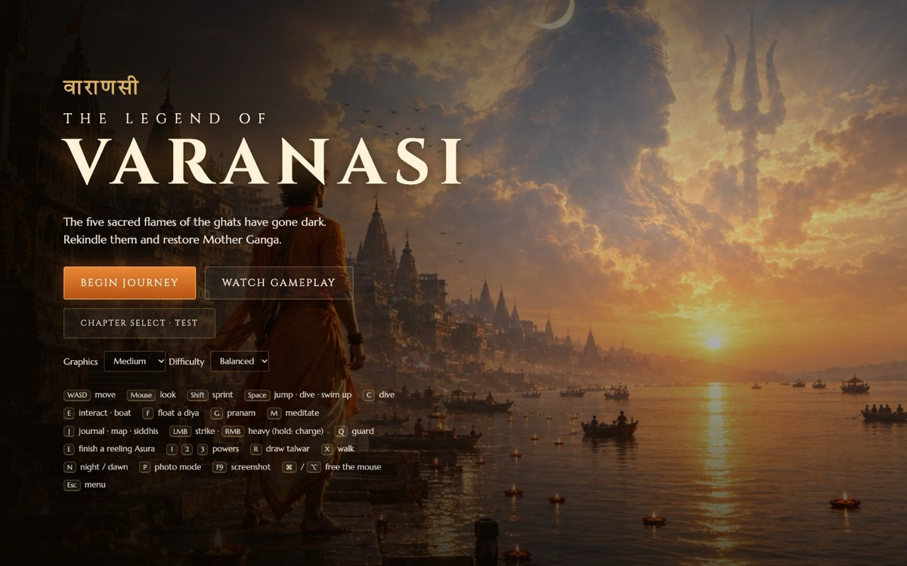
I design learning games, 3D simulations and AI tools, then I build them and ship them. Most of what you'll see below is live and you can play it.
Games, simulations and AI tools from 2026. Each cover is printed in a single ink until it reaches the middle of the screen or you hover it. Then it shows in full colour.
Homework Saathi in four panels. The story and the numbers come straight from the build log.
A Hindi, voice-first homework helpline on WhatsApp for parents of Class 5 children in government schools. Many of these parents left school before the class their child is in now.
The NCERT textbook PDFs ship with a text layer, so ingest looks solved. Copy the text out, chunk it, embed it, done.
Tesseract's Hindi model read the digit 1 as a danda and deleted it. On one page it lost 36 of 97 numbers and invented 30 that weren't there, all inside prose that reads perfectly.
A parent teaching “₹50 a kilo” from a page that says ₹150 has no way to catch it. The metric that looked best, prose accuracy, belonged to the least safe pipeline.
Nothing gets chunked until extraction clears a measured bar, checked against pages transcribed by hand.
“The hard part isn't generating the answer. It's knowing when to refuse.”
Where it stands: ingest is done and retrieval is being evaluated. Refusal calibration and a 25-parent pilot come next. Read the log ↗
More games, lessons and tools. Most are maths and English games for Grades 3–8 built at ConveGenius; a few are side quests.
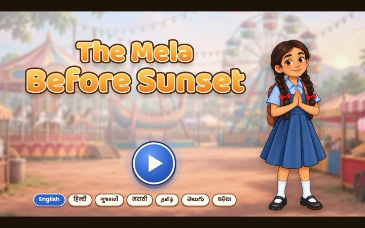
#09The Mela Before Sunset Illustrated story game in 7 languages, from English and हिंदी to OdiaStory · 7 languages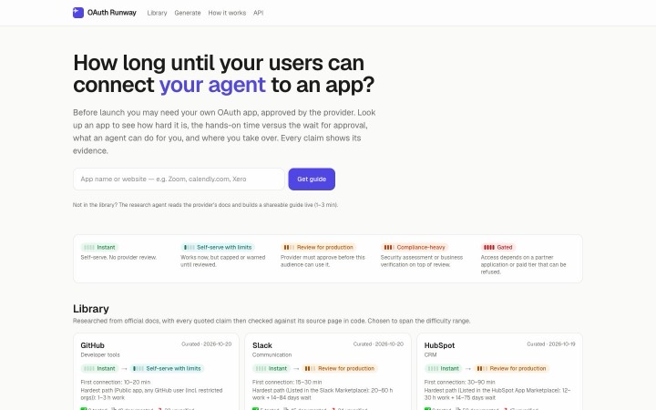
#10OAuth Runway How long until users can connect your AI agent to an app? A research agent writes the guide liveAI · dev tool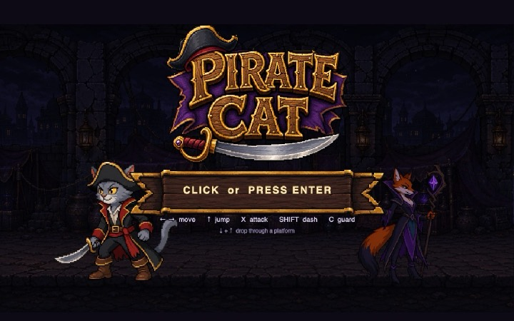
#11Pirate Cat Pixel-art platformer: jump, dash, guard and drop through platformsGame · side quest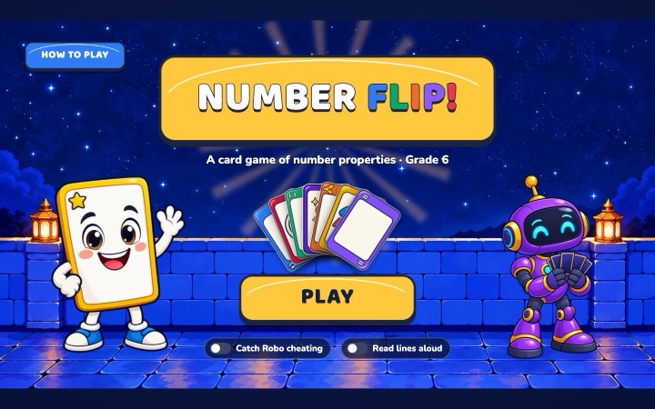
#12Number Flip! A Grade 6 card game of number properties, with a robot opponent you can catch cheatingCard game · Grade 6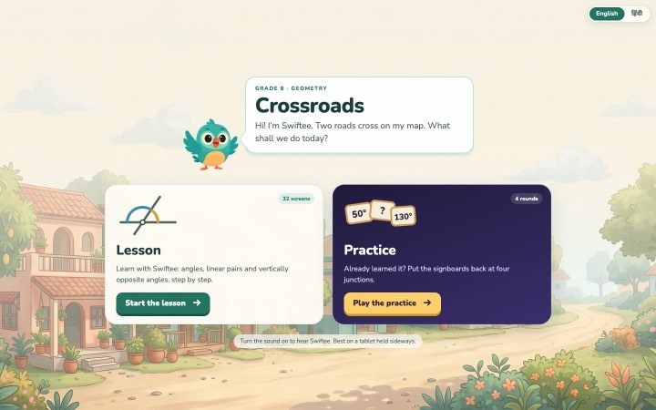
#13Crossroads Linear pairs and vertically opposite angles: a 32-screen lesson and 4 practice rounds, English + हिंदीLesson · Grade 8 #14Monsoon Gates Pari and Guddu at the dam: integers as water levels and gatesStory game · integers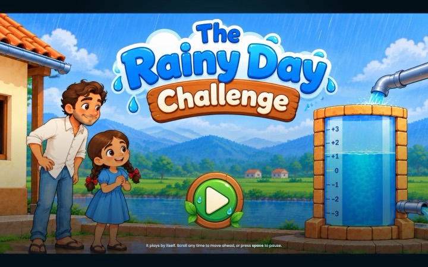
#15The Rainy Day Challenge A rainwater tank as a number line from −3 to +3; the story plays itself, scroll to move aheadStory game · integers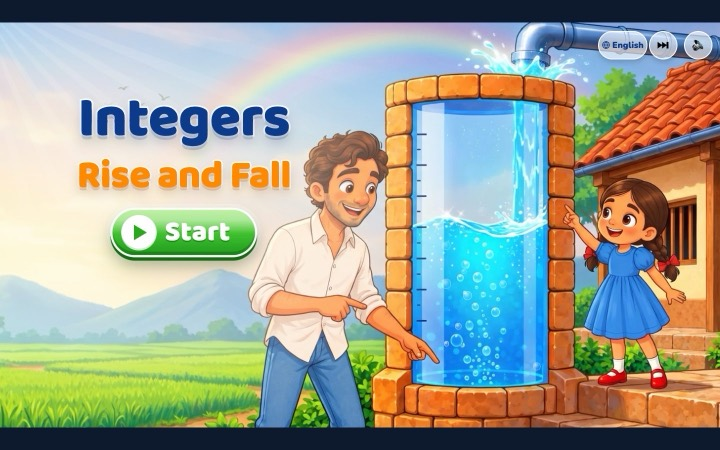
#16Integers: Rise and Fall The same village, a new mechanic: the water rises and falls as you add and subtractGame · integers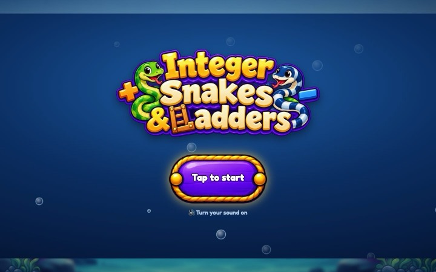
#17Integer Snakes & Ladders The board game, rebuilt so every move is a positive or negative numberBoard game · integers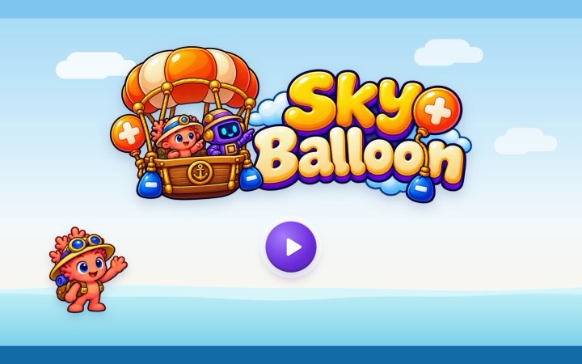
#18Sky Balloon Plus balloons lift, minus weights sink: steer a hot-air balloon with integersGame · integers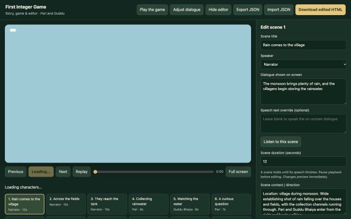
#19Story editor An in-browser editor for scenes, dialogue and voice timing, so writers can change the story without codeTool · authoring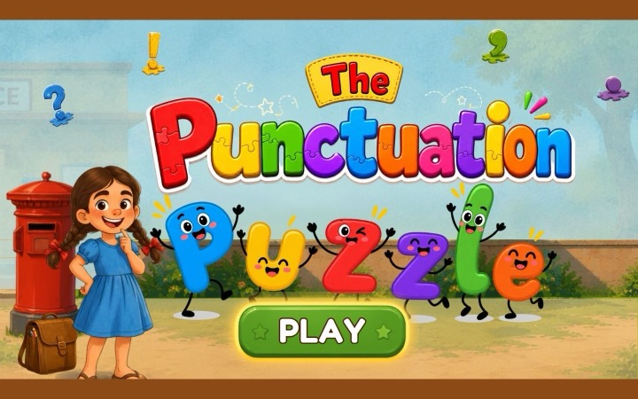
#20The Punctuation Puzzle Letters with legs and a lot of opinions about full stopsEnglish · game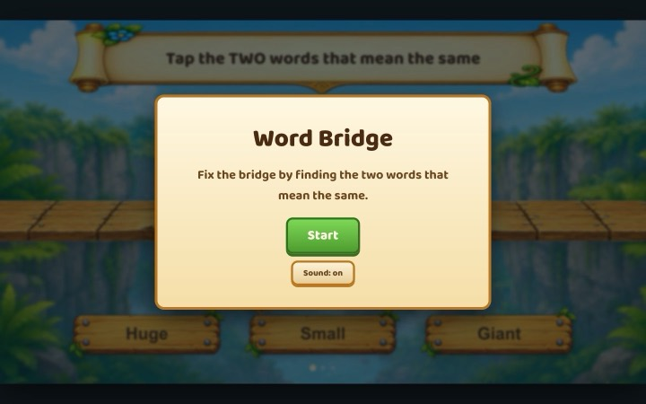
#21Word Bridge Fix the bridge by finding the two words that mean the sameEnglish · synonyms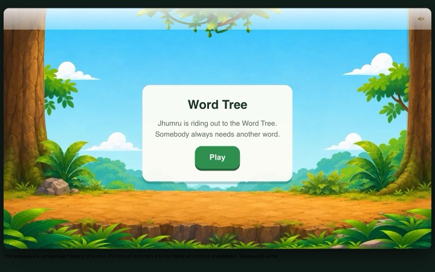
#22Word Tree Jhumru rides out to the Word Tree, where somebody always needs another wordEnglish · antonyms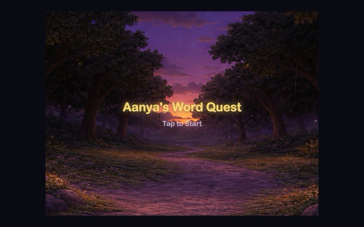
#23Aanya's Word Quest A twilight forest path, and a word at every turnEnglish · game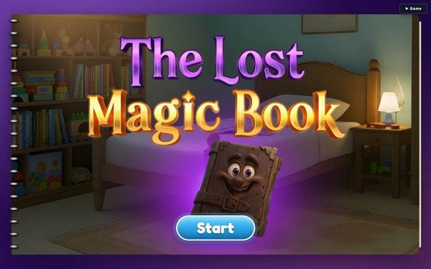
#24The Lost Magic Book A page-turning flipbook story with a game hidden inside itStorybook · game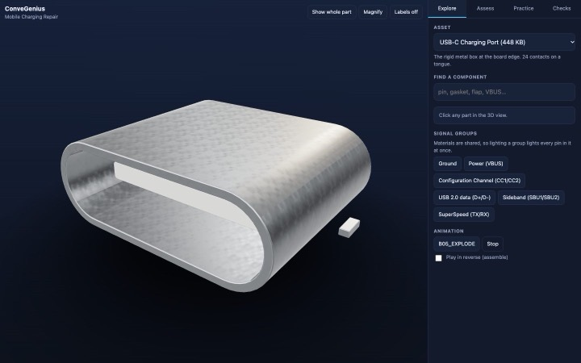
#25USB-C Port Explorer 24 contacts on a tongue: light up each signal group, explode the part, then assess and practise3D sim · ITI course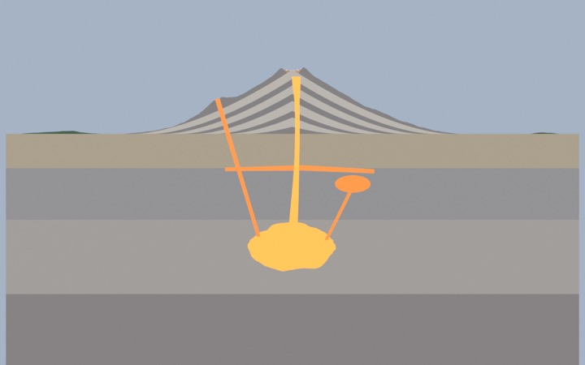
#26Volcano Sim Asset Pack A stratovolcano generated in Blender with Python: 12 GLB bundles, baked smoke flipbooks, same seed gives the same output3D assets · Blender #27Referral Hub Internal employee-referral app: Google sign-in for the work domain, Postgres, real rowsFull-stack · Next.jsOne company so far, two roles. The tools are the ones in the repos above, not a wish list.
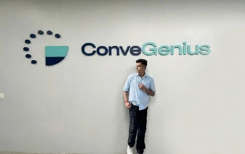
I trained in business: a BBA, then an MBA at MJP Rohilkhand University. I joined ConveGenius in July 2025 as an AI design intern, and the job was research, PRDs and Figma.
The work kept asking for more than a spec, so I started building it: lessons, games, 3D simulators, agent pipelines. Thirty live builds later, I still start with the user and the PRD. I just carry it through to something you can play.
I like problems where a wrong answer is expensive, like a parent teaching the wrong number or a child learning the wrong rule, and I like to measure before I claim.